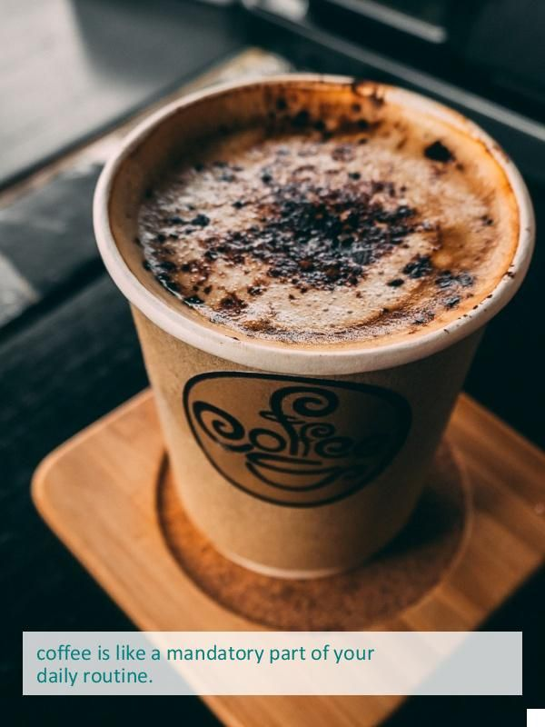
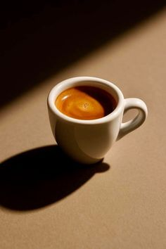
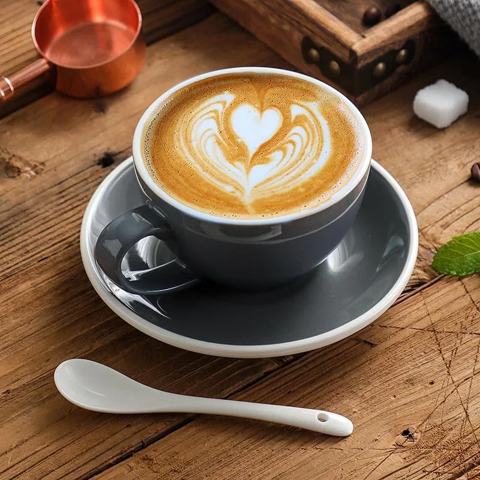

🖼️ IMG — Подводные камни
1. Размеры по умолчанию
<!-- Плохо: картинка вылезет в реальном размере -->
<img src="../assets/coffee-cup.jpg" alt="Coffee">
<!-- Хорошо: всегда задавай размеры -->
<img src="../assets/coffee-cup.jpg" alt="Coffee" width="300" height="200">.responsive-img {
width: 100%; /* вся ширина контейнера */
height: auto; /* сохраняет пропорции */
max-width: 100%; /* не вылезает за пределы */
}width:100% + height:auto

2. Object-fit — картинка не вписывается
.card-image {
width: 300px; height: 200px;
object-fit: cover; /* обрезает лишнее, пропорции ок */
/* object-fit: contain; — целиком, могут быть пустоты */
/* object-fit: fill; — растягивает (искажает) */
}cover
contain
fill
3. Lazy loading
<img src="../assets/coffee.jpg" alt="Coffee" loading="lazy">✅ грузится быстрее | ⚠️ LCP (главная картинка) не должна быть lazy
Ниже 6 картинок с loading="lazy" — они подгрузятся, только когда ты доскроллишь до них (открой DevTools → Network и прокрути).

4. Srcset — адаптивные изображения
<img
src="../assets/coffee-800.jpg"
srcset="../assets/coffee-400.jpg 400w,
../assets/coffee-800.jpg 800w,
../assets/coffee-1024.jpg 1200w"
sizes="(max-width: 600px) 100vw, 50vw"
alt="Coffee">Браузер сам выберет размер под экран. Попробуй сузить/расширить окно — в Network поменяется загруженный файл.
srcset + sizes

🎨 SVG — Нюансы работы
1. ViewBox — без него не масштабируется
<!-- Без viewBox: иконка 24px застрянет в углу окна 100px -->
<svg width="100" height="100"><path d="..." /></svg>
<!-- С viewBox: растягивается на всё окно -->
<svg viewBox="0 0 24 24" width="100" height="100"><path d="..." /></svg>без viewBox
с viewBox
2. Inline SVG vs файл
<!-- Inline: цвет меняется через CSS, анимируется -->
<svg class="icon"><path fill="currentColor" d="..." /></svg>
<!-- Файл через img: чище HTML, но цвет НЕ менять -->
<img src="../assets/leaf-icon.svg" alt="Icon">inline (наведи!) меняет цвет
файл через img (цвет зашит)
3. PreserveAspectRatio — как SVG вписывается
<svg viewBox="0 0 100 50" preserveAspectRatio="xMidYMid meet">| Значение | Аналог | Что делает |
|---|---|---|
| meet | object-fit: contain | вписывает целиком |
| slice | object-fit: cover | заполняет, обрезает |
| none | object-fit: fill | растягивает |
meet
slice
none
4. CurrentColor — наследование цвета
.icon { color: #6B8E5A; }
<svg class="icon"><path fill="currentColor" d="..." /></svg>Меняешь
color в CSS — иконка красится автоматически.3 цвета одним кодом
🎨 Background — Особенности
1. Размер фона
background-size: cover; /* заполняет блок */
background-size: contain; /* вписывает целиком */
background-size: 100px 100px;
background-size: 50% auto;cover
contain
100px (tile)
50% auto
2. Позиция фона
background-position: center center;
background-position: top right;
background-position: 20px 50px;
background-position: 50% 50%;top left
top right
center
20% 80%
3. Повторение
background-repeat: repeat; /* по умолчанию */
background-repeat: no-repeat;
background-repeat: repeat-x; /* по горизонтали */
background-repeat: repeat-y; /* по вертикали */repeat
no-repeat
repeat-x
repeat-y
4. Фиксированный фон (параллакс)
.hero {
background-image: url('../assets/bg-hero.jpg');
background-attachment: fixed; /* фон стоит при скролле */
background-size: cover;
}Скролль страницу — картинка ниже остаётся на месте, а рамка движется.
Параллакс: скролль меня
5. Множественные фоны
.box {
background:
url('../assets/pattern.png') top left repeat,
linear-gradient(135deg, rgba(252,63,29,.35), rgba(155,142,196,.35)),
#F5E6D3; /* цвет под слоями */
}pattern + градиент + цвет